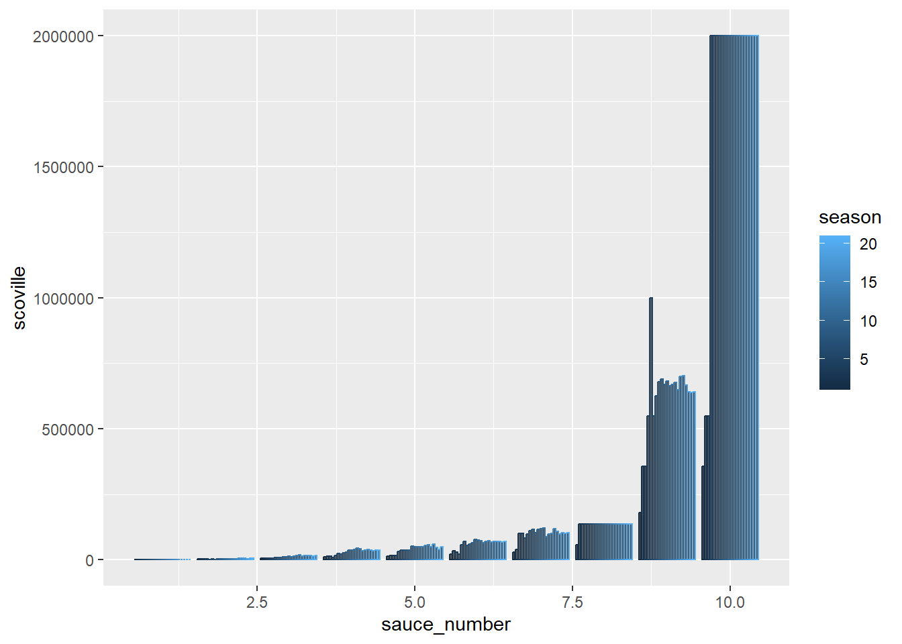
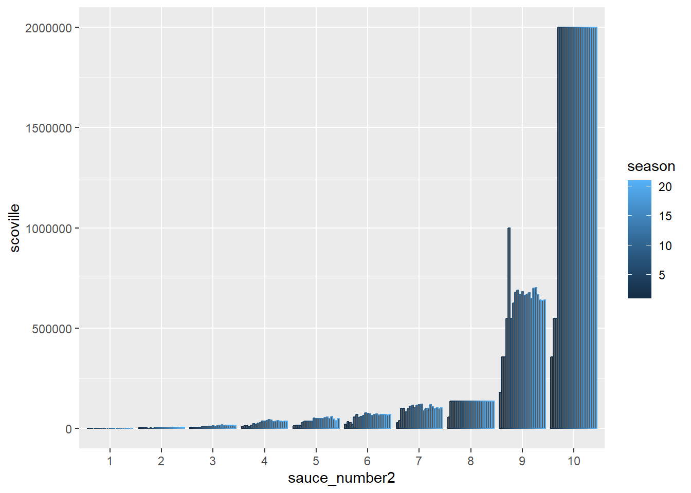
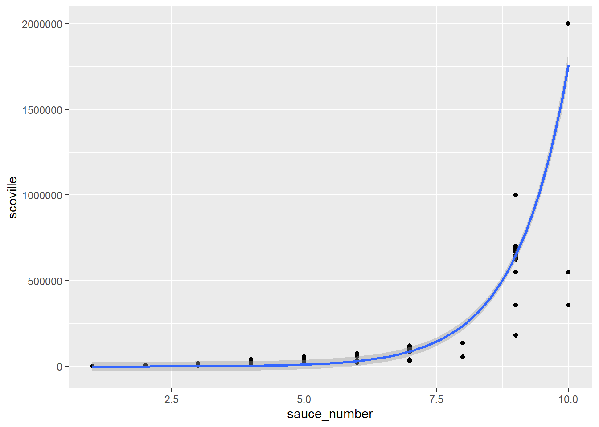
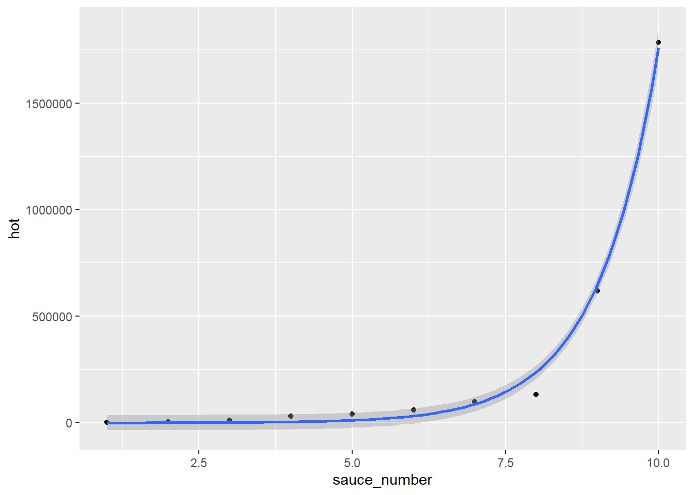
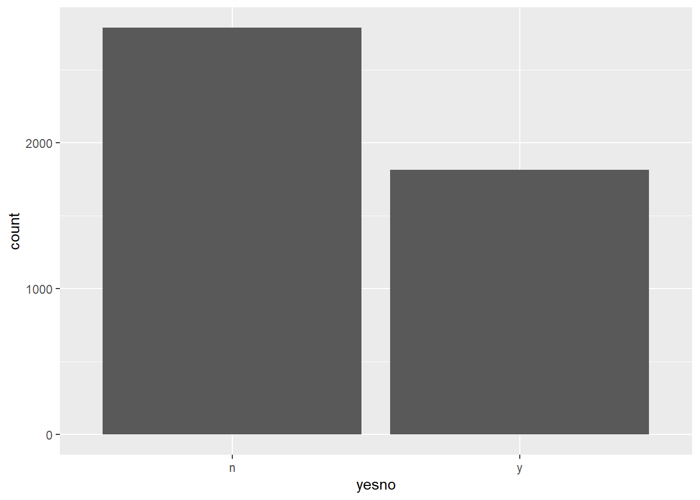
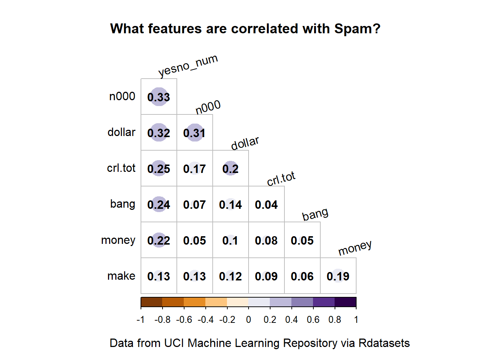

The data is taken from some show where apparently people are interviewed while eating hot sauce. As the interview proceeds (as measured by the question number), the hot sauces get hotter.
How much hotter?
I made a factor out of the sauce_number/ question number. You can see the x-axis label is nicer for the version with the factor sauce_number2.
Column Plot
#making a factorsauces <- sauces %>%mutate(sauce_number2 =factor(sauce_number))#numericggplot(sauces, aes(sauce_number, scoville, color = season)) +geom_col(position ="dodge2")

#factorggplot(sauces, aes(sauce_number2, scoville, color = season)) +geom_col(position ="dodge2")

And having that variable as a factor allows for a really nice box plot as well. ggplot generates a box plot for each level of the factor and displays them in a single plot. Using the numeric form of the variable gives a warning that it is expecting a group and puts everything into a single box plot. (You can add group = sauce_number to the aes to recreate the plot you get straight out of the box with the factor version.)
The increase in heat level as the questions proceed looks like it has exponential behavior to me. Also looks like some questions # have more variation in the heat level. Questions 8 and 10 seem to have settled in on a specific sauce after the first few seasons.
So it looks like once they found a 2 million scoville sauce they used variations of it or rebranded it as a show tie in for the remaining seasons.
Log Scale Column Plot
For exponential data, you can plot on a log scale to see more details. (Season 8 and 10 really stand out with their flat tops.)
ggplot(sauces, aes(sauce_number2, scoville, color = season)) +geom_col(position ="dodge2") +scale_y_log10()
It looks like there are a few different regimes. The first three or four questions, the heat level rises sharply with each question. Then for the middle questions, the increase is somewhat more gradual. For the last two or three questions, the heat level again rises steeply.
Average Heat per Question
This might be more easily seen by plotting the average heat for each question across all seasons.
But, we get a decent-ish fit just assuming an exponential increase. I’m not doing anything fancy here. I’m just using geom_smooth and passing it an exponential formula. This isn’t serious model fitting, this is more a guide to the eye.
ggplot(sauces, aes(x = sauce_number, y = scoville)) +geom_point() +geom_smooth(method ="lm", formula = (y ~exp(x)))

ggplot(average_sauce, aes(x = sauce_number, y = hot)) +geom_point() +geom_smooth(method ="lm", formula = (y ~exp(x)))

What does this mean?
Honestly, probably nothing. :) It is possible that the producers were trying to have some sort of exponential increase in the heat level, so the experience got much worse with each question. But I doubt anyone sat down and simulated what Scoville levels they needed for each question.
TidyTuesday 33: Spam Emails
Load the data
tuesdata <- tidytuesdayR::tt_load(2023, week =33)
--- Compiling #TidyTuesday Information for 2023-08-15 ----
--- There is 1 file available ---
--- Starting Download ---
Downloading file 1 of 1: `spam.csv`
--- Download complete ---
spam <- tuesdata$spam
All the variables are complete. This is a subset of the data submitted to the UCI Machine Learning Repository. Looking at the data dictionary, we might expect all the variable to be positively correlated with spam.
variable
class
description
crl.tot
double
Total length of uninterrupted sequences of capitals
dollar
double
Occurrences of the dollar sign, as percent of total number of characters
bang
double
Occurrences of ‘!’, as percent of total number of characters
money
double
Occurrences of ‘money’, as percent of total number of characters
n000
double
Occurrences of the string ‘000’, as percent of total number of words
make
double
Occurrences of ‘make’, as a percent of total number of words
yesno
character
Outcome variable, a factor with levels ‘n’ not spam, ‘y’ spam
I’m using skim to examine the data. I’ve discussed it before here; it is a great tool that gives more information than summary.
skim(spam)
Data summary
Name
spam
Number of rows
4601
Number of columns
7
_______________________
Column type frequency:
character
1
numeric
6
________________________
Group variables
None
Variable type: character
skim_variable
n_missing
complete_rate
min
max
empty
n_unique
whitespace
yesno
0
1
1
1
0
2
0
Variable type: numeric
skim_variable
n_missing
complete_rate
mean
sd
p0
p25
p50
p75
p100
hist
crl.tot
0
1
283.29
606.35
1
35
95
266.00
15841.00
▇▁▁▁▁
dollar
0
1
0.08
0.25
0
0
0
0.05
6.00
▇▁▁▁▁
bang
0
1
0.27
0.82
0
0
0
0.32
32.48
▇▁▁▁▁
money
0
1
0.09
0.44
0
0
0
0.00
12.50
▇▁▁▁▁
n000
0
1
0.10
0.35
0
0
0
0.00
5.45
▇▁▁▁▁
make
0
1
0.10
0.31
0
0
0
0.00
4.54
▇▁▁▁▁
Is this an imbalanced data set?
Often classification data sets have much more normal data than abnormal data. Are there reasonable numbers of spam entries in this collection?
ggplot(spam, aes(yesno)) +geom_bar()

That’s not too bad. I’m going to calculate the percentage of spam messages by converting this to a numerical variable and taking the mean. I need a number anyway for my correlation plot.
One of my all time favorite packages is corrplot. Correlations can suggest what variables are likely to be important to the outcome and they can also flag potential issues that could arise from multicollinearity among the predictors. I’m normally default to a table over a viz, but corrplot presents the data so beautifully that I just can’t resist using it.
A correlation plot is pretty technical, so I probably would not use it in most circumstances. I use it in my own EDA but I wouldn’t include it in a communication to a general audience. If I were sharing this, I’d clean up the variable names to be clearer.
Correlations need to be calculated between numeric variables, so I am removing the categorical yesno and keeping my numerical one.
Corrplot has so many different customizations. I’ve annotated my code to reflect what the different parameters do, but there are dozens of others that can be used for more customization. I like to include the actual numerical values (addCoef.col), omit the diagonal since it will be all ones (diag) and only show one half of the matrix ( type = ‘lower’ or ‘upper’). I also like to have the magnitude (abs value ) reflected by the size of the circle and the value (including sign reflected by the color). The features in this data set are all positively correlated with each other and
Sometimes labels get cropped. This might need to be fixed via the margin parameter (mar) within the call to corrplot or via the par statement before the call.
par(xpd =TRUE) # allows corrplot labels into the margin. fixes clippingspam %>%select(-yesno) %>% cor %>% {.[order(abs(.[, 7]), decreasing =TRUE),order(abs(.[, 7]), decreasing =TRUE)]} %>%corrplot(method ='circle', #circle is default and I think it is the best anywaytype ='lower', # upper, lower, or fulltl.col ='black', #color of text labeladdCoef.col ='black',#color of the coefficientscl.ratio =0.2, #size of the color bar legendtl.srt =15, # this sets the angle of the textcol =COL2('PuOr', 10), #this sets the color palette, COL2 is divergingdiag =FALSE, # don't show diagmar =c(1, 1, 4, 1), title ="What features are correlated with Spam?", )title(sub="Data from UCI Machine Learning Repository via Rdatasets")

All of them have some positive correlation. None of the predictors look strongly correlated with each other either.
What would I do next if I were going to model this data set?
I’ve written about classification problems before and I’d probably start with the fitting methods I used there.
All of the numerical variables had pretty skewed distributions based on the skim output. Lots of models require more normally distributed data. I’d transform the data and scale and normalize it as well. There is a great table in the Tidy Modeling with R which goes over which preprocessing steps are required or beneficial for different types of fitting.
Citation
BibTeX citation:
@online{sinks2023,
author = {Sinks, Louise E.},
title = {Tidy {Tuesday} {Twofer} (32 and 33)},
date = {2023-08-15},
url = {https://lsinks.github.io/posts/2023-08-15-TidyTuesday-Twofer/tidytuesday-twofer.html},
langid = {en}
}